منشورات و نشاطات الفوج
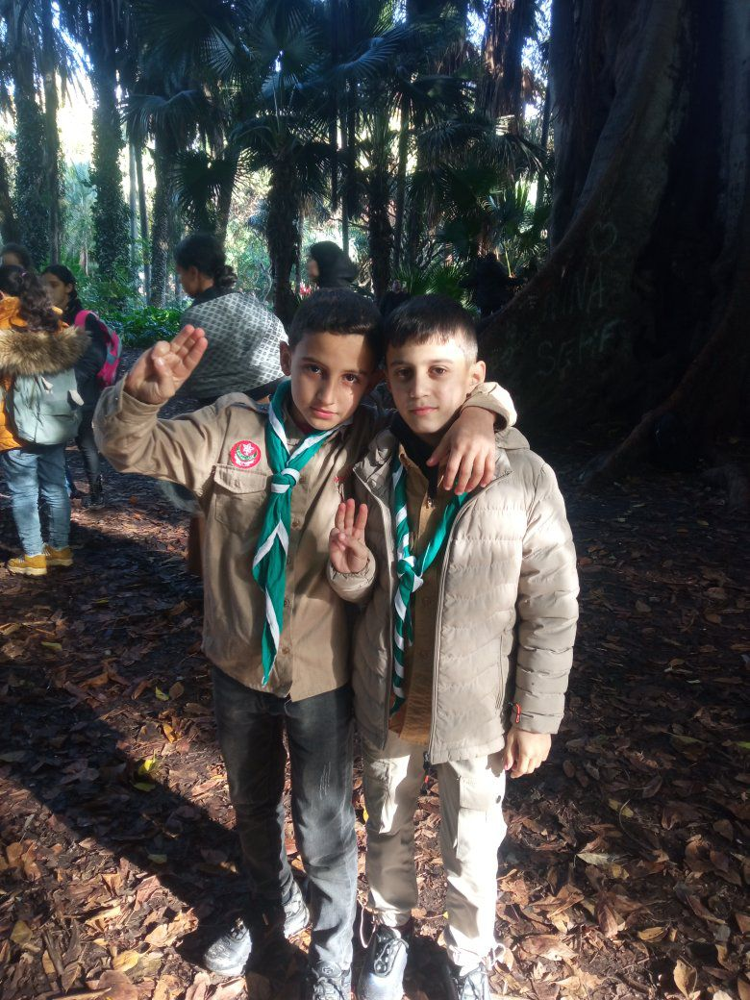
المحطة الثانية من الرحلة
حديقة التجارب الحامة… مساحة طبيعية جمعت بين الاكتشاف، الراحة، والفرح.
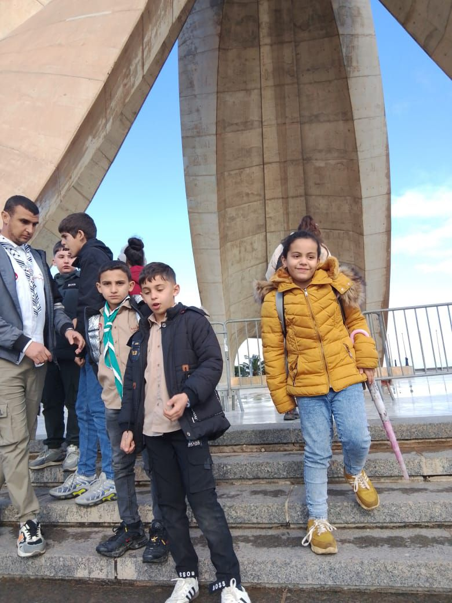
رحلة وطنية
رحلة تربوية وطنية إلى معالم الجزائر العاصمة في إطار برنامج العطلة الشتوية.
رحلة وطنية إلى الجزائر العاصمة
ضمن برنامج العطلة الشتوية

تفاصيل الرحلة
تنفيذًا لبرنامج العطلة الشتوية، نظم
فوج لقدس سيدي داود رحلة تربوية
إلى الجزائر العاصمة شملت:
#مقام_الشهيد،
#متحف_المجاهد،
المصعد الهوائي، وأخيرًا
حديقة التجارب الحامة.
كانت #المحطة_الأولى تاريخية بامتياز،
حيث حط أبناء وبنات فوج القدس الرحال عند
مقام الشهيد ثم متحف المجاهد، حيث تُروى العزة
والكرامة في كل زاوية. تعرّف كشافينا على جزء
من تاريخ الجزائر المجيد، واستمعوا إلى شروحات
وحكايات لأبطال صنعوا الحرية.
لحظات مفعمة بالدهشة والانبهار، رأينا فيها
حب الوطن يتفتح في عيون كشافينا،
فشكرًا لهم على حماسهم، وكل الشكر للقادة
المؤطرين على مرافقتهم وحسن التأطير.
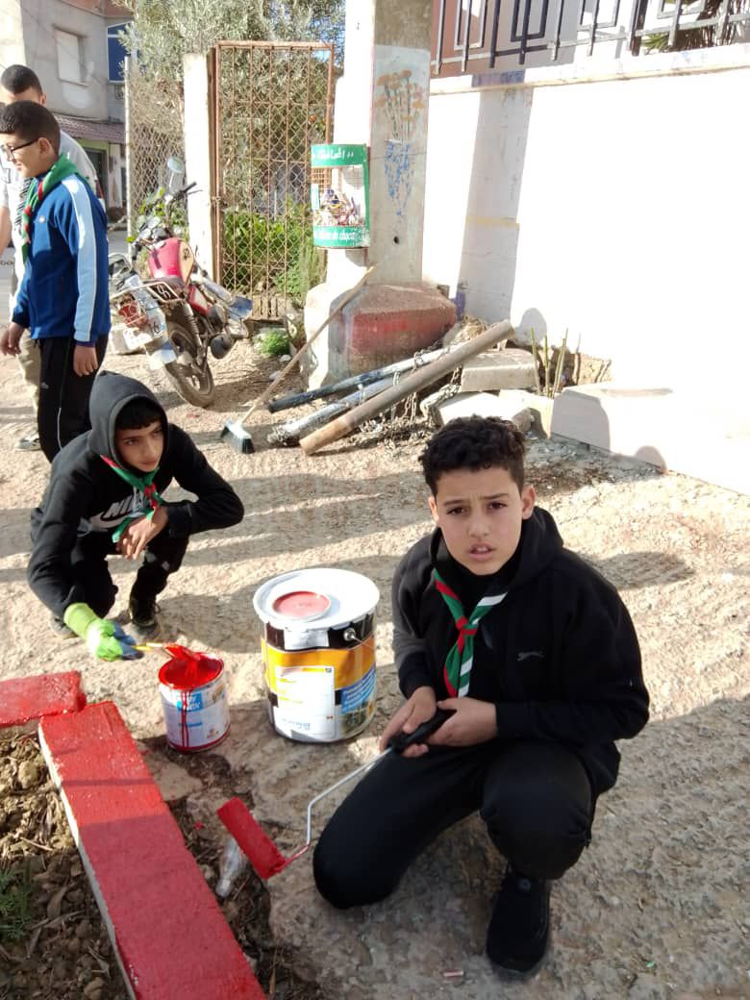
حملة تطوعية
حملة تنقية وتنظيف بمدرسة علي عبديش الابتدائية في إطار الحملة الوطنية لتنظيف المدارس.
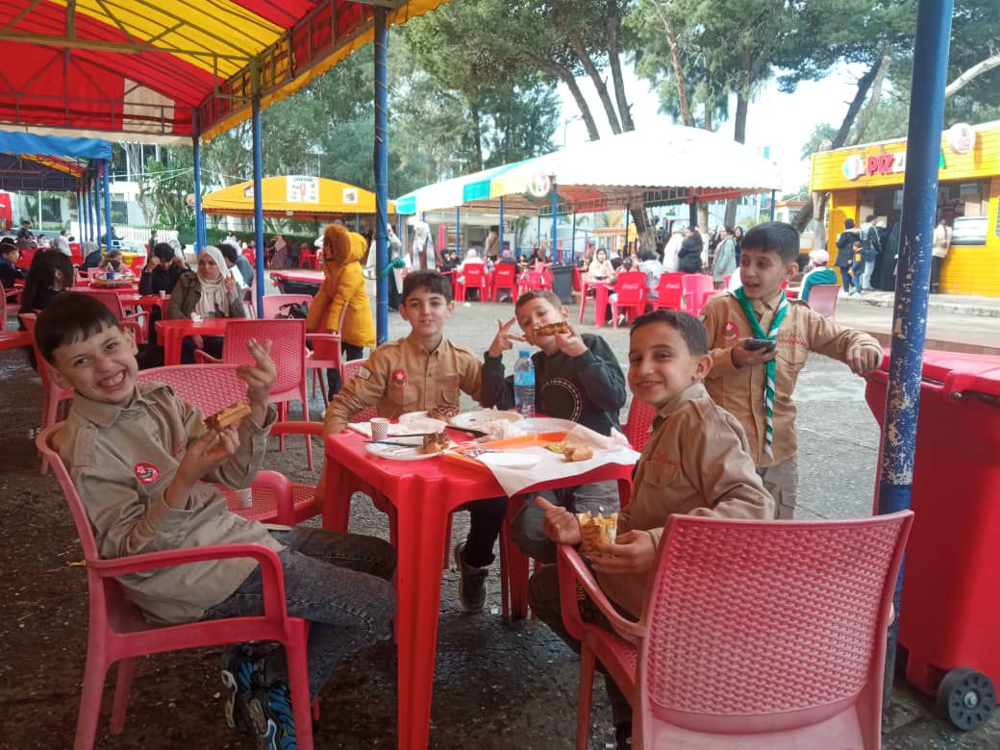
رحلة ترفيهية
رحلة ترفيهية لمدينة الألعاب دريم برك بقصر المعارض لفائدة وحدات الفوج.
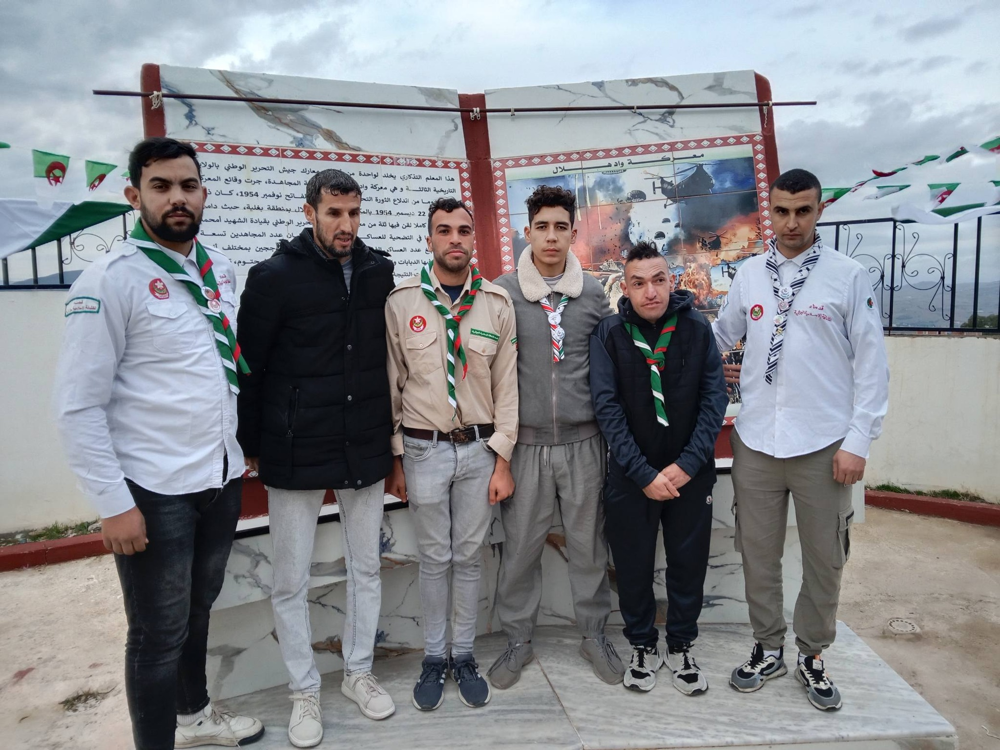
الذاكرة الوطنية
مشاركة فوج القدس في إحياء الذكرى 71 لمعركة واد هلال بقرية شرابة بلدية بغلية.
مؤازة
قيادة فوج القدس سيدي داود تتمنى الشفاء العاجل للقائد علوش منير من فوج البدر بغلية.
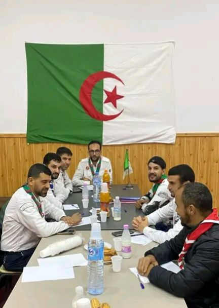
لقاءات رسمية
مشاركة فوج القدس في اجتماع محافظي الأفواج للجهة الشرقية بمقر فوج البدر بغلية.
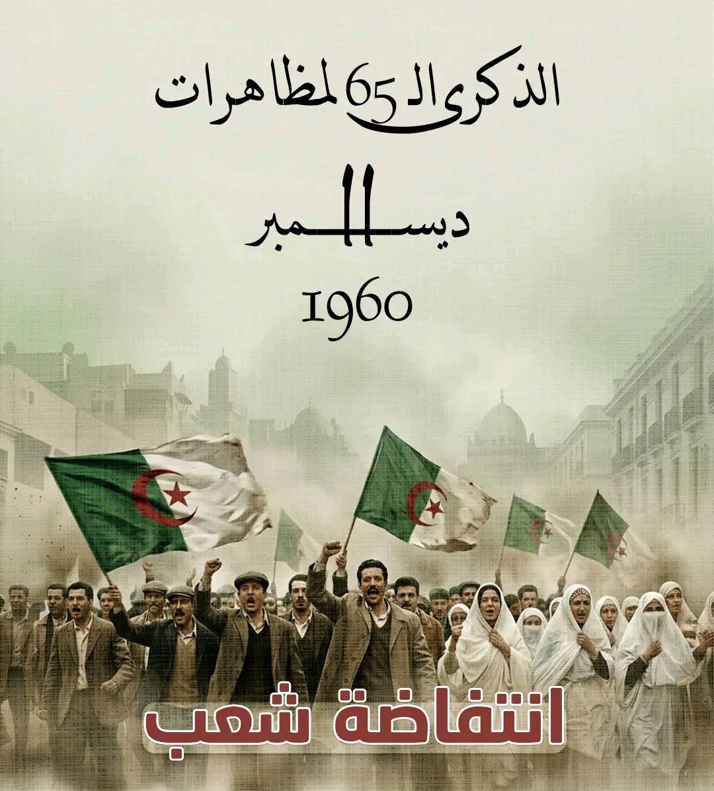
مظاهرات 11 ديسمبر 1960
محطة تاريخية خالدة أكدت التلاحم القوي بين الشعب الجزائري وثورته، وأوصلت صوت المطالبة بالاستقلال إلى العالم.
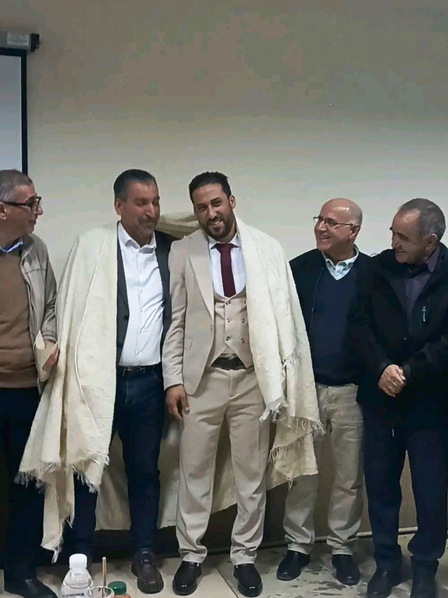
تهنئة تخرج دكتوراه
يتقدم فوج القدس سيدي داود بأسمى عبارات التهاني والتبريكات للأستاذ توكال عبد النور بمناسبة نيل درجة الدكتوراه.

تحية لروضة واحة الطفل
تحية تقدير لروضة واحة الطفل ببلدية سيدي داود على نشر برامج تربوية هادفة تسهم في تنمية الروح الوطنية لدى الجيل الصاعد تحت إشراف أساتذة الروضة.
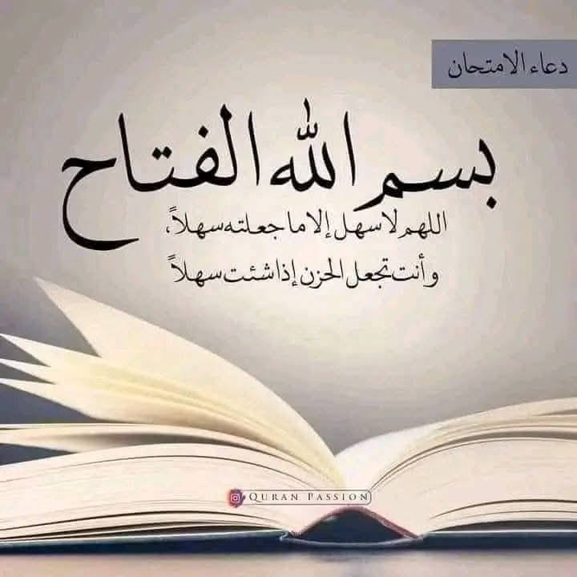
انطلاق امتحانات الثلاثي الأول
انطلاق امتحانات الثلاثي الأول اليوم الأحد 07 ديسمبر 2025. نتمنى كل التوفيق والنجاح لبناتنا وأبنائنا.
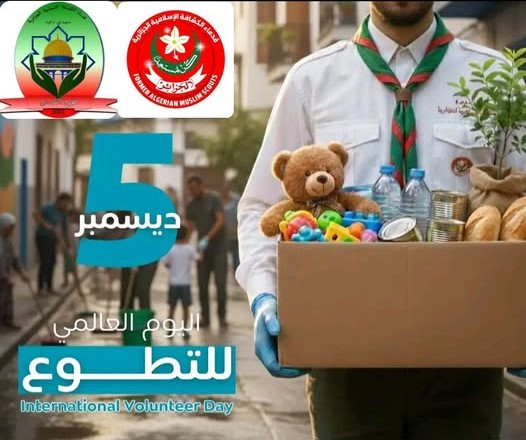
اليوم العالمي للتطوع
يحتفي فوج القدس سيدي داود لقدماء الكشافة الإسلامية الجزائرية باليوم العالمي للتطوع، مناسبة نُجدّد فيها قيم العطاء، خدمة المجتمع، وروح المبادرة.
نتائج المقبولين في الفوج
الإعلان الرسمي عن النتائج الأولية للفتية المنخرطين الفوج للموسم الكشفي 2026/2025.
نتائج المقبولين
نوفمبر 2025

عن الإعلان
يعلن فوج القدس لقدماء الكشافة الإسلامية ببلدية سيدي داود عن استئناف الحصص الكشفية
ابتداءً من هذا الأسبوع.
ندعو جميع المترشحين إلى الاطلاع على نتائج القبول.
يُطلب من الفتية الجدد الالتحاق بمقر الفوج بالمكتبة المركزية بسيدي داود يوم الجمعة
28
نوفمبر 2025 على الساعة 15:00 مساءً.
كونوا في الموعد.
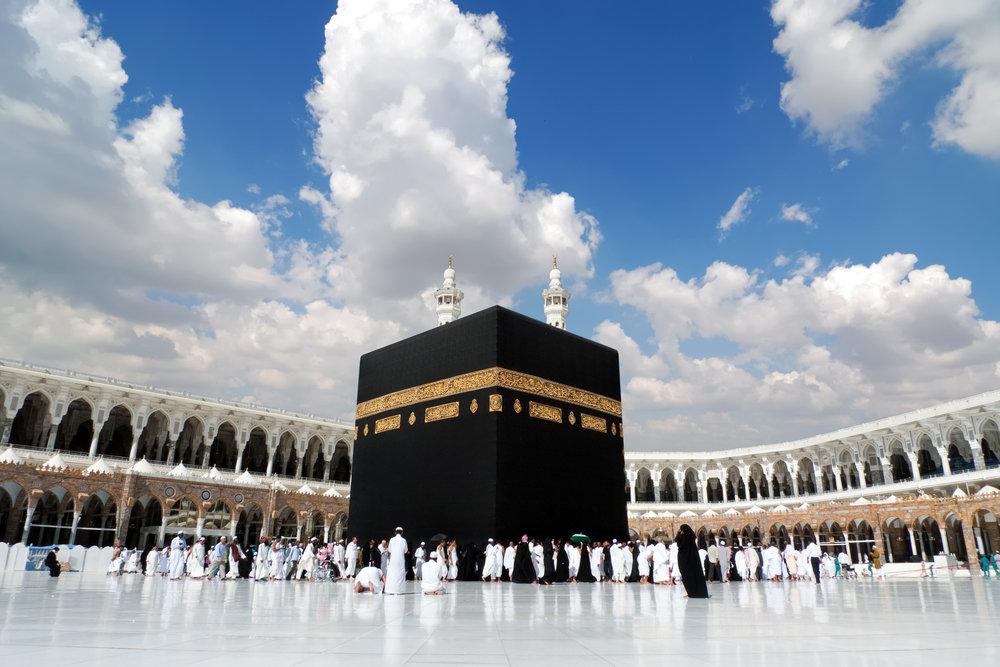
تهاني
نتائج قرعة الحج لعام 2026/1448 في بلدية سيدي داود مبروك للفائزين

مشاركة
مشاركة قادة فوج القدس لقدماء الكشافة الجزائرية في الملتقى الولائي للاطارات الكشفية
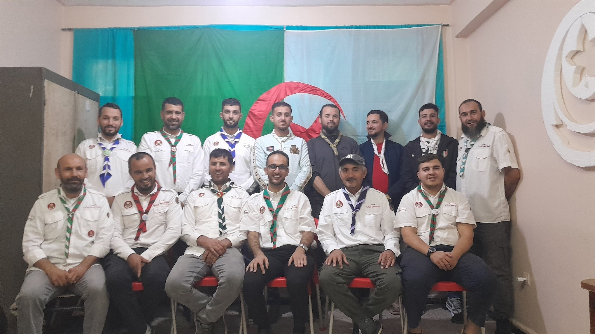
ملتقيات
اللقاء الأول لمحافظي الأفواج تحت شعار: أفواجنا الكشفية ..قُوتنا
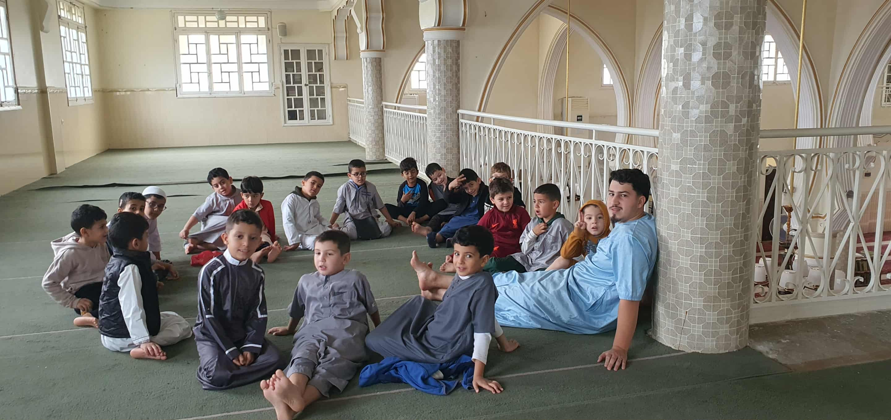
تسجيلات
إقتتاح تسجيلات حفظ القرآن للموسم 2026/2025.
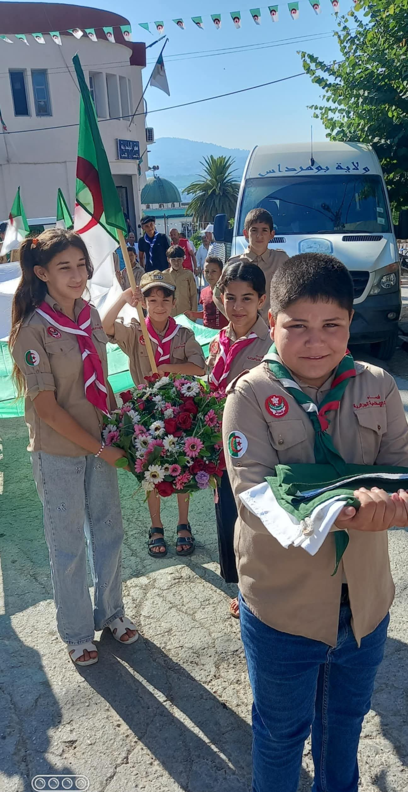
تسجيلات
إقتتاح التسجيلات الكشفية للموسم 2026/2025.